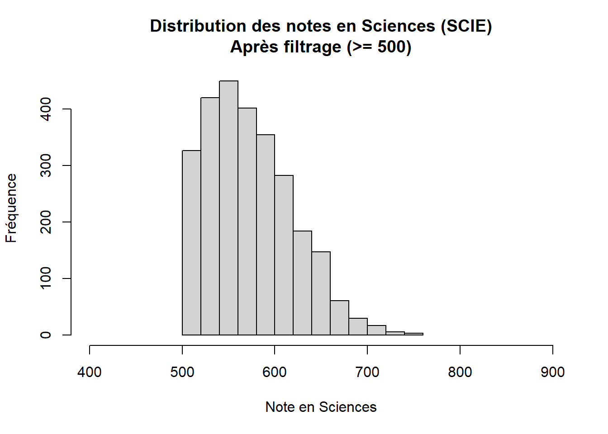
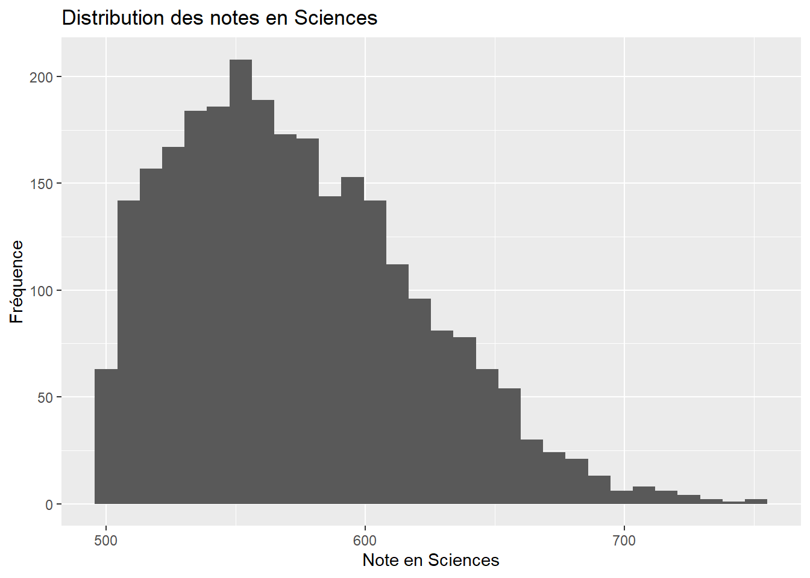
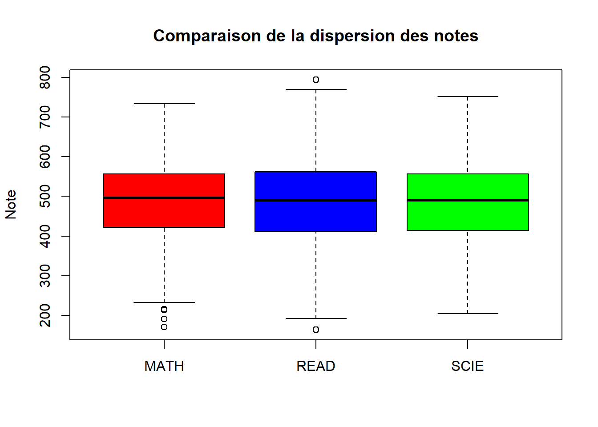
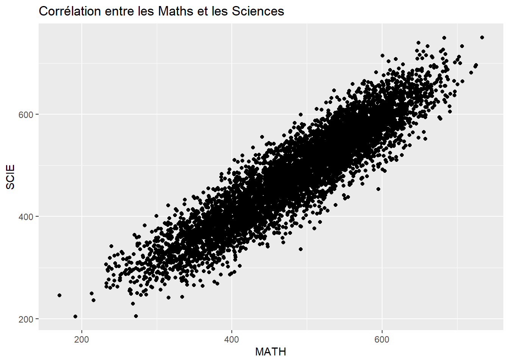
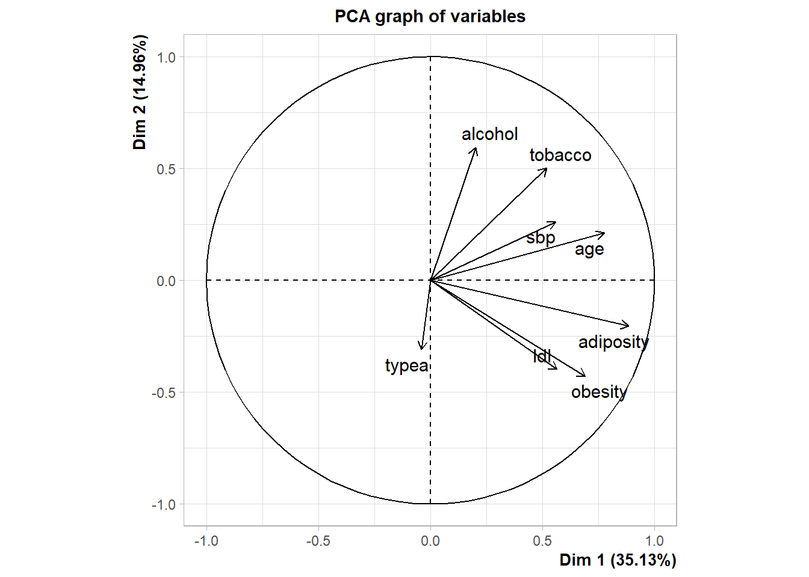
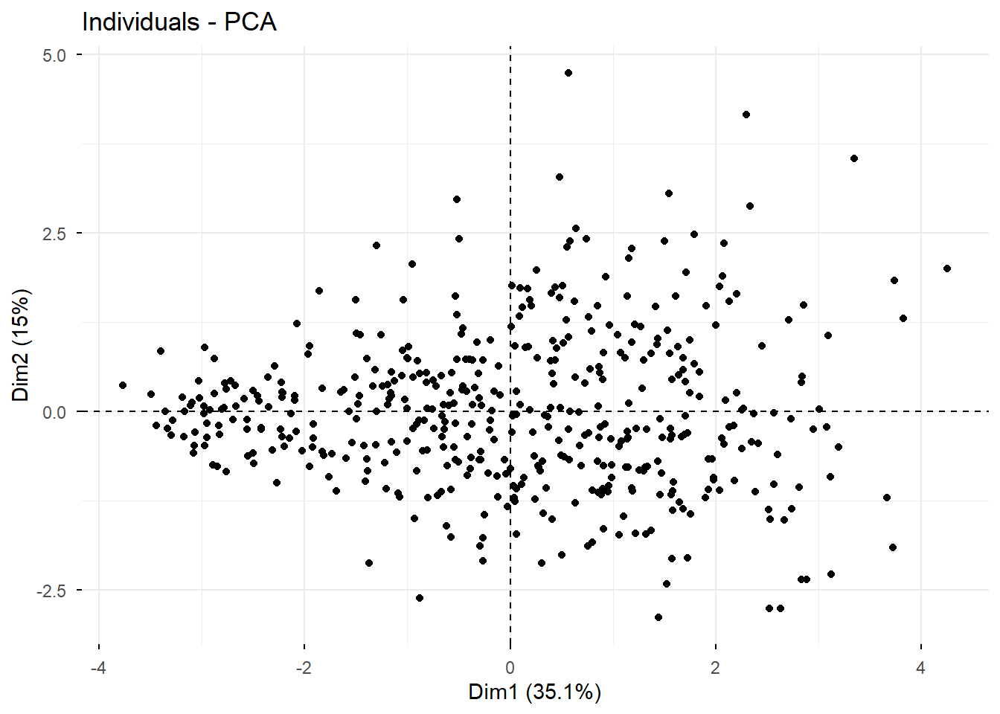
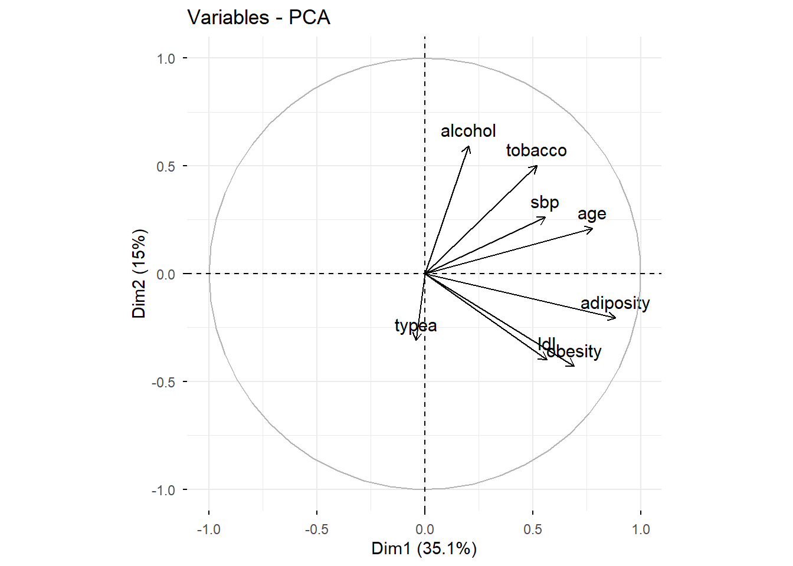

rm(list = ls())
gc() used (Mb) gc trigger (Mb) max used (Mb)
Ncells 605035 32.4 1377638 73.6 702065 37.5
Vcells 1102549 8.5 8388608 64.0 1928002 14.8On commence par nettoyer notre environnement:
rm(list = ls())
gc() used (Mb) gc trigger (Mb) max used (Mb)
Ncells 605035 32.4 1377638 73.6 702065 37.5
Vcells 1102549 8.5 8388608 64.0 1928002 14.8Créer le vecteur qui contient tous les multiples de 3 entre 1 et 50.
Pour cela on utilise la fonction seq() pour créer notre vecteur.
On affiche ensuite notre vecteur avec la fonction print().
notre_vec <- seq(from = 3, to = 50, by = 3)
print(notre_vec) [1] 3 6 9 12 15 18 21 24 27 30 33 36 39 42 45 48Créer la fonction “tronque()” qui prend pour argument un nombre x et un vecteur vec et qui change tous les éléments du vecteur vec supérieur à x en x.
On écrit la définition de la fonction:
tronque <- function(x,vec){
# On filtre vec sur les éléments supérieur à x, et on leur attribue x
vec[vec>x] <- x
return(vec)
}On teste la fonction avec le vecteur de l’exercice 1, que l’on tronque à 30:
print(tronque(30, notre_vec)) [1] 3 6 9 12 15 18 21 24 27 30 30 30 30 30 30 30On est content on a bien tronqué notre vecteur.
Créer la fonction “maxi()” qui a un vecteur numérique associe son élément maximum.
maxi <- function(vec){
# on initialise le maximum avec le premier élément
max <- vec[1]
for (i in 2:length(vec)){ # on parcoure tous les éléments
if (vec[i] > max){ # on compare avec notre max actuel
max <- vec[i] # condition vérifiée alors on atrribue notre nouveau max
}
}
return(max)
}On teste notre focntion sur le vecteur du premier exo:
print(maxi(notre_vec)) # on affiche le résultat[1] 48Créer un dataframe de 10 étudiants avec leur nom, prénom, âge, sexe, entreprise. Puis maniopulation sur le jeu de données.
On commence par créer notre dataframe:
etudiants <- data.frame(
nom = c("Dupont", "Jalibert", "Penaud", "Cros", "Jelonch",
"Meafou", "Marchand", "Depoortere", "Flament", "Fickou"),
prenom = c("Antoine", "Mathieu", "Damian", "François", "Anthony",
"Emmanuel", "Julien", "Nicolas", "Thibault", "Gael"),
age = c(18, 20, 19, 23, 22, 25, 17, 23, 24, 21),
sexe = c("F", "M", "F", "M", "F", "M", "F", "M", "F", "M"),
entreprise = c("Google", "Microsoft", "Amazon", "Apple", "Meta",
"IBM", "Oracle", "SAP", "Salesforce", "Facebook")
)Notre DF est créée, on peut l’observer:
print(etudiants) nom prenom age sexe entreprise
1 Dupont Antoine 18 F Google
2 Jalibert Mathieu 20 M Microsoft
3 Penaud Damian 19 F Amazon
4 Cros François 23 M Apple
5 Jelonch Anthony 22 F Meta
6 Meafou Emmanuel 25 M IBM
7 Marchand Julien 17 F Oracle
8 Depoortere Nicolas 23 M SAP
9 Flament Thibault 24 F Salesforce
10 Fickou Gael 21 M FacebookOn calcule l’âge moyen de notre groupe d’étudiant:
print(mean(etudiants$age))[1] 21.2On regarde la proportion de femme dans notre groupe d’étudiant:
nb_femme <- sum(etudiants$sexe == "F")
nb_total <- nrow(etudiants)
proportions_femme <- nb_femme / nb_total
print(proportions_femme)[1] 0.5On essaye maintenenat de créer une variable de tranche d’âge:
etudiants$tranche_age <- cut(etudiants$age,
breaks = c(0,19,21,23,30),
labels = c("U19","U21","U23","A"))On regarde si notre nouvelle variable s’est bien intégrée au dataframe:
print(etudiants) nom prenom age sexe entreprise tranche_age
1 Dupont Antoine 18 F Google U19
2 Jalibert Mathieu 20 M Microsoft U21
3 Penaud Damian 19 F Amazon U19
4 Cros François 23 M Apple U23
5 Jelonch Anthony 22 F Meta U23
6 Meafou Emmanuel 25 M IBM A
7 Marchand Julien 17 F Oracle U19
8 Depoortere Nicolas 23 M SAP U23
9 Flament Thibault 24 F Salesforce A
10 Fickou Gael 21 M Facebook U21On va utiliser le package dplyr pour faire des statistiques par tranche d’âge, on commence donc par charger le package:
library(dplyr)On peut maintenant calculer l’âge moyen et la proportion de femmes par tranche d’âge.
etudiants %>%
group_by(tranche_age) %>%
summarise(effectif = n(),
age_moyen = round(mean(age),2),
proportion_femmes = round(mean(sexe == "F"),2)) %>%
arrange(tranche_age)# A tibble: 4 × 4
tranche_age effectif age_moyen proportion_femmes
<fct> <int> <dbl> <dbl>
1 U19 3 18 1
2 U21 2 20.5 0
3 U23 3 22.7 0.33
4 A 2 24.5 0.5 On commence par nettoyer notre environnement:
rm(list = ls())
gc() used (Mb) gc trigger (Mb) max used (Mb)
Ncells 779241 41.7 1377638 73.6 1377638 73.6
Vcells 1427343 10.9 8388608 64.0 2228982 17.1On veut importer PisaFR et comparer avec PisaUS, on considère que nos données se trouvent dans le dossier “Data”:
pisa_fr <- read.table("Data/PisaFR.csv",
header = TRUE,
sep = ";",
dec = ",",
na = " ")
pisa_us <- read.table("Data/PisaUS.csv",
header = TRUE,
sep = ";",
dec = ",",
na = " ")On observe les structures de PisaFR et de PisaUS:
str(pisa_fr)'data.frame': 6308 obs. of 11 variables:
$ X : int 179992 179993 179994 179995 179996 179997 179998 179999 180000 180001 ...
$ COUNT: chr "FRA" "FRA" "FRA" "FRA" ...
$ MATH : num 310 361 454 559 545 ...
$ READ : num 289 435 413 634 587 ...
$ SCIE : num 298 416 433 612 571 ...
$ GLCM : logi NA NA NA NA NA NA ...
$ RCLI : num 309 458 437 647 601 ...
$ RCUN : num 252 419 440 632 591 ...
$ RCER : num 309 410 438 641 611 ...
$ RTSN : num 257 386 434 631 605 ...
$ RTML : num 280 417 440 631 562 ...str(pisa_us)'data.frame': 4838 obs. of 11 variables:
$ X : int 582014 582015 582016 582017 582018 582019 582020 582021 582022 582023 ...
$ COUNT: chr "USA" "USA" "USA" "USA" ...
$ MATH : num 427 429 538 516 451 ...
$ READ : num 434 368 590 594 508 ...
$ SCIE : num 429 433 547 591 497 ...
$ GLCM : logi NA NA NA NA NA NA ...
$ RCLI : num 445 311 575 572 527 ...
$ RCUN : num 432 362 580 593 503 ...
$ RCER : num 406 396 603 593 525 ...
$ RTSN : num 439 379 586 575 487 ...
$ RTML : num 437 394 583 569 487 ...On peut voir que nous avons les mêmes variables. Il y a plus de lignes d’observations dans PisaFR que dans PisaUS. Enfin, on retrouve la même variable GLCM remplie de NA dans les deux dataframes.
On supprime la colonne GLCM, qui est la 6e du dataframe:
pisa_fr<-pisa_fr[,-6] # pour supprimer la sixième colonne
head(pisa_fr) X COUNT MATH READ SCIE RCLI RCUN RCER
179992 179992 FRA 309.5953 288.9840 298.1477 308.9349 251.5719 309.1987
179993 179993 FRA 360.6862 434.9926 415.8937 457.5800 418.5374 410.1336
179994 179994 FRA 453.5479 412.5912 432.8017 436.5805 439.7077 438.4752
179995 179995 FRA 559.4898 633.9166 612.3981 647.2681 631.8412 640.6178
179996 179996 FRA 544.5136 586.8591 571.0675 600.8357 590.8236 611.4404
179997 179997 FRA 560.1331 577.0338 557.4484 628.3089 569.5149 585.1818
RTSN RTML
179992 257.0441 279.8403
179993 386.4993 416.8271
179994 433.5100 440.2152
179995 631.0588 630.5249
179996 604.5138 561.9608
179997 599.8920 582.9154On veut supprimer toutes les observations dont la somme des notes en français (READ) et en maths (MATH) sont inférieure à 1000:
pisa_fr <- pisa_fr[pisa_fr$READ + pisa_fr$MATH >= 1000, ]Ainsi que celles des étudiants dont les notes en sciences (SCIE), sont inférieures à 500:
pisa_fr <- pisa_fr[pisa_fr$SCIE >= 500, ]On effectue un histogramme pour vérifier que notre filtre a bien fonctionné pour la condition des notes en sciences inférieures à 500:
hist(pisa_fr$SCIE,
main = "Distribution des notes en Sciences (SCIE)\nAprès filtrage (>= 500)",
xlab = "Note en Sciences",
ylab = "Fréquence",
xlim = c(400, 900))
On est content on voit qu’il n’y a aucune observations avec une note inférieure à 500.
On souhaite refaire la question précèdente avec les packages dplyr et ggplot2.
Pour cela on commence par re-importer nos données:
pisa_fr <- read.table("Data/PisaFR.csv",
header = TRUE,
sep = ";",
dec = ",",
na = " ")On charge également les packages nécessaires:
library(dplyr)
library(ggplot2)Et maintenant nous pouvons utiliser les packages:
pisa_fr %>%
select(-GLCM) %>%
filter(READ + MATH >= 1000, SCIE >= 500) %>%
ggplot(aes(x = SCIE)) +
geom_histogram() +
labs(
title = "Distribution des notes en Sciences",
x = "Note en Sciences",
y = "Fréquence"
) 
On va fusionner nos deux dataframe:
pisa_new <- rbind(pisa_fr, pisa_us)On souhaite manipuler les données en utilisant les commandes slice, filter, select, relocate, rename, arrange, mutate, groupe_by et le pipe
pisa_new %>%
# renommer pour plus de clarté
rename(Pays = COUNT, Sciences = SCIE, Math = MATH, Lecture = READ) %>%
# créer une nouvelle variable
mutate(Total_Score = Math + Lecture) %>%
# filtrer les observations
filter(Total_Score >= 1000, Sciences >= 500) %>%
# sélectionner et réorganiser les colonnes
select(Sciences, Math, Lecture, Total_Score, Pays) %>%
relocate(Total_Score, .after = Sciences) %>%
# trier par score total décroissant
arrange(desc(Total_Score)) %>%
# grouper et résumer
group_by(Pays) %>%
# garder les 10 meilleurs
slice(1:10)# A tibble: 20 × 5
# Groups: Pays [2]
Sciences Total_Score Math Lecture Pays
<dbl> <dbl> <dbl> <dbl> <chr>
1 751. 1480. 733. 747. FRA
2 750. 1476. 683. 793. FRA
3 682. 1456. 719. 738. FRA
4 723. 1447. 678. 769. FRA
5 693. 1445. 724. 721. FRA
6 696. 1444. 725. 718. FRA
7 674. 1429. 686. 743. FRA
8 707. 1419. 701. 718. FRA
9 685. 1408. 684. 724. FRA
10 645. 1407. 697. 710. FRA
11 795. 1561. 750. 810. USA
12 751. 1481. 709. 772. USA
13 725. 1462. 708. 754. USA
14 683. 1461. 693. 768. USA
15 786. 1450. 683. 767. USA
16 768. 1446. 691. 755. USA
17 725. 1441. 711. 730. USA
18 743. 1437. 706. 732. USA
19 687. 1437. 673. 764. USA
20 694. 1436. 694. 743. USA On supprime tous les objets en mémoire:
rm(list = ls())Et on recharge les données de PisaFR:
# Recharger les données
pisa_fr <- read.table("Data/PisaFR.csv",
header = TRUE, sep = ";", dec = ",", na = " ")
library(tidyverse)Grâce à la librairie dplyr nous allons regarder quelques statistiques clés pour les Maths, la Lecture et les Sciences:
pisa_fr %>%
summarise(
Matières = c("Maths", "Lecture", "Sciences"),
Moyenne = c(mean(MATH, na.rm = TRUE), mean(READ, na.rm = TRUE), mean(SCIE, na.rm = TRUE)),
Mediane = c(median(MATH, na.rm = TRUE), median(READ, na.rm = TRUE), median(SCIE, na.rm = TRUE)),
Ecart_Type = c(sd(MATH, na.rm = TRUE), sd(READ, na.rm = TRUE), sd(SCIE, na.rm = TRUE))
) Matières Moyenne Mediane Ecart_Type
1 Maths 487.0133 495.6069 91.86448
2 Lecture 483.7900 490.1750 102.58829
3 Sciences 485.0131 490.0779 94.70026On remarque que la dispersion est assez proche, les medianes et les écarts-types sont proches.
On décide de faire un boxplot pour chacune de ces matières car on s’intéresse à la dispersion de celles-ci:
boxplot(pisa_fr[, c("MATH", "READ", "SCIE")],
main = "Comparaison de la dispersion des notes",
col = c("red", "blue", "green"),
ylab = "Note")
Cela conforte l’impression que l’on a eu avec le summarise précedent.
Regardons maintenenat la corrélation entre les Maths et les Sciences, est-ce qu’il y a une relation ?
ggplot(pisa_fr, aes(x = MATH, y = SCIE)) +
geom_point() +
labs(title = "Corrélation entre les Maths et les Sciences")
Visuellement on remarque une très forte corrélation positive entre les notes en maths et en sciences.
On commence par nettoyer notre environnement:
rm(list = ls())
gc() used (Mb) gc trigger (Mb) max used (Mb)
Ncells 1541273 82.4 2426710 129.7 2426710 129.7
Vcells 2797256 21.4 8388608 64.0 4768814 36.4On importe les données:
sa_heart <- read.table("data/SAHeart.csv", header = TRUE, sep = ",", dec = ".")On observe les premières lignes de notre dataframe:
head(sa_heart) sbp tobacco ldl adiposity famhist typea obesity alcohol age chd
1 160 12.00 5.73 23.11 Present 49 25.30 97.20 52 Si
2 144 0.01 4.41 28.61 Absent 55 28.87 2.06 63 Si
3 118 0.08 3.48 32.28 Present 52 29.14 3.81 46 No
4 170 7.50 6.41 38.03 Present 51 31.99 24.26 58 Si
5 134 13.60 3.50 27.78 Present 60 25.99 57.34 49 Si
6 132 6.20 6.47 36.21 Present 62 30.77 14.14 45 NoAinsi que la structure du jeu de données:
str(sa_heart)'data.frame': 462 obs. of 10 variables:
$ sbp : int 160 144 118 170 134 132 142 114 114 132 ...
$ tobacco : num 12 0.01 0.08 7.5 13.6 6.2 4.05 4.08 0 0 ...
$ ldl : num 5.73 4.41 3.48 6.41 3.5 6.47 3.38 4.59 3.83 5.8 ...
$ adiposity: num 23.1 28.6 32.3 38 27.8 ...
$ famhist : chr "Present" "Absent" "Present" "Present" ...
$ typea : int 49 55 52 51 60 62 59 62 49 69 ...
$ obesity : num 25.3 28.9 29.1 32 26 ...
$ alcohol : num 97.2 2.06 3.81 24.26 57.34 ...
$ age : int 52 63 46 58 49 45 38 58 29 53 ...
$ chd : chr "Si" "Si" "No" "Si" ...Dans un premier temps nous allons conserver seulement les variables quantitatives:
sa_heart_quant <- sa_heart %>%
select(-famhist, -chd)Nous allons transformer les données afin d’effectuer une ACP:
sa_heart_cr <- scale(sa_heart_quant, center = TRUE, scale = TRUE)On va utiliser les packages factoextra et FactoMineR pour réaliser l’ACP.
On charge nos librairies:
library(factoextra)
library(FactoMineR)On réalise l’ACP sur nos données centrées réduites:
res.pca <- PCA(sa_heart_cr)

On peut à présent représenter le nuage des individus sur plan Axe1 - Axe2:
# Nuage des individus
fviz_pca_ind(res.pca,
geom = "point") 
On peut également regarder le nuage des variables:
fviz_pca_var(res.pca, col.var = "black")
Cet axe est celui qui explique la plus grande part de la variance de nos données.
On observe que les variables adiposity, obesity, age et sbp pointent fortement vers la droite de l’axe.
Cet axe apporte une information complémentaire décorrélée du premier.
Les variables alcohol et tobacco pointent vers le haut, tandis que typea pointe vers le bas.
D’après nos sorties, on a: - l’Axe 1 explique 35,1% de la variance totale des données - l’Axe 2 explique 15% de la variance - à eux deux, ces axes captent 50,1% de l’info